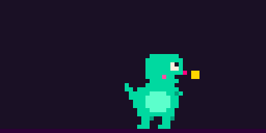

napping
nothing in 10 min
Zs bob above its head.
A pixel dino for Claude Code. It eats your tokens, grows fat on your spend, sweats and panics when the burn rate climbs, and explodes when you hit your plan limit. You're going to spend the tokens anyway; might as well know how much.
The stage follows today's spend. The mood follows the burn rate over the last ten minutes and how much of your 5-hour window is gone, whichever is worse.
nothing in 10 min
Zs bob above its head.
tokens flowing
Wanders the pane, chewing.
≥ $20/h or ≥ 75% of 5h
Keeps eating, dripping.
≥ $40/h or ≥ 90% of 5h
Turns pink and shakes; the pane edges go red.
plan limit hit
Game over until the reset, then a new dino hatches.

nec --watch: the same pixels kitty draws as half-block characters, two per cell.# the dino and today's tokens and cost
python3 -m nec
# one line, for status bars
python3 -m nec --line
# live in a split pane (Ctrl-C quits)
python3 -m nec --watch
# every sprite once
python3 -m nec --galleryIt reads Claude Code's session logs on your machine and keeps token counts and timestamps, never message content.
Per-model rates, cache writes and reads, fast mode. On a subscription that's not your bill, just the size of the meal.
One line in the status-line script saves the 5-hour and weekly usage and their reset times, nothing else.